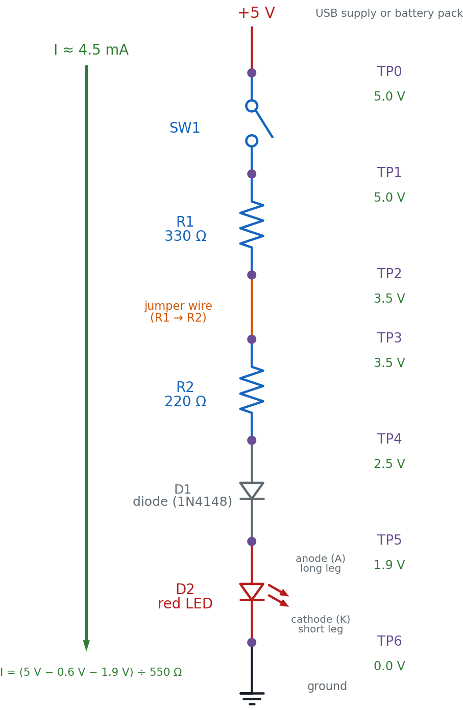
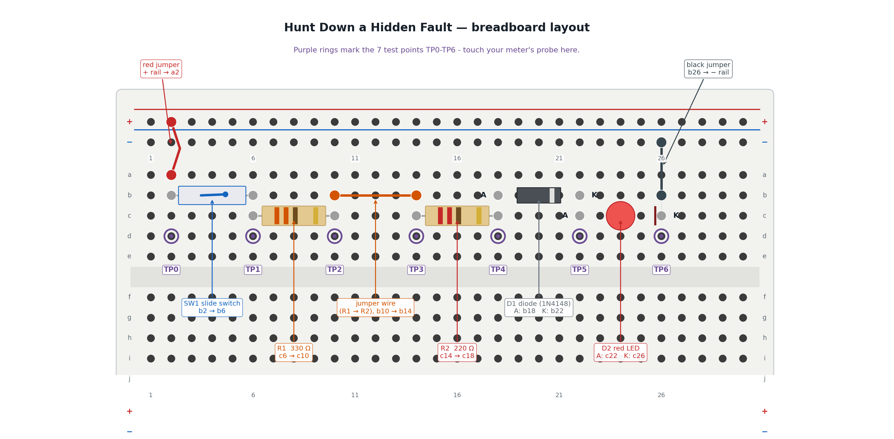

Hunt Down a Hidden Fault
A wire works loose. A part dies quietly. A circuit that lit up perfectly yesterday is dark today, and nothing about it tells you why. Today you build a switch-and-resistor chain that lights a red LED — a circuit with six places trouble could be hiding — then learn the exact method real engineers use to corner any one of them in three measurements or less.
Time to Play Detective, Builder!
 Every circuit you've built so far, you built to work. Today you build one
on purpose so you can practice finding what's wrong with it — using a real
board you trust, and a safe simulator with a fault hidden inside. Let's
light it up!
Every circuit you've built so far, you built to work. Today you build one
on purpose so you can practice finding what's wrong with it — using a real
board you trust, and a safe simulator with a fault hidden inside. Let's
light it up!
What You'll Learn
By the end of this lab you will be able to:
- Build a six-stage series circuit — a switch, two resistors, a diode, and an LED — and measure its healthy voltage at every test point
- Predict each test point's voltage using Ohm's Law and the diode/LED forward-voltage drops, before you ever touch a probe to it
- Apply half-split testing to locate a hidden fault in three or fewer measurements
- Read a multimeter's open, short, and normal signatures and use them as evidence, not guesses
- Document a troubleshooting log clear enough that another builder — or your future self — could follow it
Before You Start
| Time | 50 minutes |
| Difficulty | Intermediate — your first troubleshooting lab |
| You should already know | How to use a multimeter's voltage mode (Chapter 20) |
| Strongly recommended first | Lab 60: Meet Your Multimeter |
| Helpful background | Chapter 21: Systematic Troubleshooting |
What You'll Need
Everything here is in the $50 kit.
| Qty | Part | Value or marking | How to spot it |
|---|---|---|---|
| 1 | Breadboard | half-size, 30 columns | the white plastic board with rows of holes |
| 1 | Slide switch | SW1, SPDT | a small plastic body with a sliding lever |
| 1 | Resistor | R1, 330 Ω | tan body, bands orange-orange-brown, then gold |
| 1 | Resistor | R2, 220 Ω | tan body, bands red-red-brown, then gold |
| 1 | Diode | D1, 1N4148 or 1N4001 | small gray cylinder with a painted band on the cathode end |
| 1 | LED | D2, red, 5 mm | clear red dome; one leg is longer than the other |
| 3 | Jumper wires | 1 red, 1 black, 1 any color | to wire the + rail, the − rail, and the R1–R2 gap |
| 1 | Power supply | 5 V USB, or a battery pack | any phone charger with a USB-A male-to-male cable |
Optional but recommended: a multimeter, for Part A's real measurements. You do not need one to finish this lab — every predicted voltage is printed below, so you can compare the simulator's readings against those printed numbers instead of your own.
No exact 330 Ω or 220 Ω on hand? Anything close works — the predicted voltages will shift a little, but the method you're practicing today doesn't care about the exact numbers. What you must not do is skip a resistor entirely; that changes which test point the current-limiting job happens at, and the math in this lab won't match your board anymore.
Safety First
At 5 volts, nothing in this circuit can hurt you. You can touch every part of it while it runs. The habits below protect the parts, not you — and one of them protects your multimeter specifically.
- Wire everything first, plug in power last. Every time, no exceptions.
- Unplug before you rewire. A live wire moved by accident is how a short circuit happens — a path where current races straight from + to − with nothing to slow it down.
Resistance and Diode-Test Mode Need the Power OFF
 This is the one multimeter mistake that matters most in this whole lab.
Never switch your meter to resistance (Ω) or diode-test mode while
your circuit is still powered. Those modes push the meter's own small
test current through whatever you're probing — and a live 5 V supply
fighting that test current gives you a meaningless reading at best, and
risks the meter at worst. Voltage mode is the only mode you'll use while
the board is powered on in this lab.
This is the one multimeter mistake that matters most in this whole lab.
Never switch your meter to resistance (Ω) or diode-test mode while
your circuit is still powered. Those modes push the meter's own small
test current through whatever you're probing — and a live 5 V supply
fighting that test current gives you a meaningless reading at best, and
risks the meter at worst. Voltage mode is the only mode you'll use while
the board is powered on in this lab.
The Circuit Diagram
Here is the circuit you're about to build and then hunt for faults in — one supply, six stages, seven test points.

Read it top to bottom, the way current flows: out of +5 V, through SW1, through R1, across the jumper wire that connects R1 to R2, through R2, through D1 (anode to cathode), through D2 (anode to cathode), and into ground. That single loop is the whole circuit — break it anywhere and TP6 stops being the only dark point; everything downstream of the break goes with it.
TP2 and TP3 sit on either side of a plain jumper wire, not a component. That's on purpose — a loose or broken jumper is one of the most common real faults on any breadboard, so this circuit treats "the wire between R1 and R2" as a suspect stage exactly like R1 or R2 themselves.
The Breadboard Layout
Here is the same six stages on the actual board — the picture to copy, hole for hole.

The two pictures show the same six stages. Here's exactly how they line up:
| In the schematic | On the breadboard |
|---|---|
| TP0, the +5 V supply | The red jumper from the + rail into a2 |
| SW1 | The slide switch bridging b2 → b6 |
| TP1 | Column 6 — the shared node between SW1 and R1 |
| R1, 330 Ω | The tan resistor bridging c6 → c10 |
| TP2 | Column 10 — the shared node between R1 and the jumper wire |
| The jumper wire (R1 → R2) | The orange wire bridging b10 → b14 |
| TP3 | Column 14 — the shared node between the wire and R2 |
| R2, 220 Ω | The tan resistor bridging c14 → c18 |
| TP4 | Column 18 — the shared node between R2 and D1 |
| D1, diode | The banded gray cylinder, anode at b18, cathode at b22 |
| TP5 | Column 22 — the shared node between D1 and D2 |
| D2, red LED | The red dome, anode at c22, cathode at c26 |
| TP6, ground | D2's cathode leg at c26, returned to the − rail by a black jumper from b26 |
The trick that makes this work is the same hidden wiring from your very first LED circuit: every hole in a column's top group (a-e) is one connected node. Column 10's group joins R1's right leg to the jumper wire's left leg without them ever touching directly — that connection is TP2.
Part A: Build It and Find Your Baseline
You're building a real, working circuit first — one you trust, with numbers you calculated yourself and can check with a meter. That trusted baseline is what Part B compares against.
- Leave the power unplugged. Every wire goes in before any power does.
- Push the red jumper into a hole on the + rail, and its other end into a2.
- Push the slide switch's two legs into b2 and b6.
- Bend R1's legs and push them into c6 and c10. A resistor has no direction — either way round is fine.
- Push a jumper wire from b10 to b14. This is the R1–R2 stage — TP2 to TP3.
- Bend R2's legs and push them into c14 and c18.
- Look at D1 before it goes in: the painted band marks the cathode. Push the plain (anode) end into b18 and the banded (cathode) end into b22.
- Push D2's long leg (anode) into c22 and its short leg (cathode) into c26.
- Push a black jumper from b26 to a hole on the − rail.
Checkpoint — before power
 Run your finger along the whole path and say it out loud: + rail → a2 →
SW1 → R1 → wire → R2 → D1 → D2 → − rail. If any step in that sentence
has nothing plugged into it, find the gap now — it's much easier to spot
with the power still off. Then check the two parts where direction
matters: D1's band should face b22, and D2's long leg should be in
c22, not c26. Every other part in this build is direction-proof.
Run your finger along the whole path and say it out loud: + rail → a2 →
SW1 → R1 → wire → R2 → D1 → D2 → − rail. If any step in that sentence
has nothing plugged into it, find the gap now — it's much easier to spot
with the power still off. Then check the two parts where direction
matters: D1's band should face b22, and D2's long leg should be in
c22, not c26. Every other part in this build is direction-proof.
Predict First
Before you measure anything, work out what a healthy version of this circuit should read. A silicon diode like D1 drops about 0.6 V in the forward direction (the same number Chapter 21 used for diode-test mode), and a red LED like D2 drops about 1.9 V — the number this book has used since Chapter 12.
With R1 and R2 in series, the total resistance is:
The current has to push through both resistors, the diode, and the LED, so Ohm's Law gives:
That's dimmer than your very first LED circuit — this one asks two resistors to share the current-limiting job, not one — and that's expected, not a fault. Now walk that same 4.5 mA down the chain, subtracting each part's drop as you go, and fill in your predictions before you touch a meter to anything:
| Test Point | What it's after | Predicted Voltage | Measured Voltage |
|---|---|---|---|
| TP0 | Battery +, before SW1 | 5.0 V | |
| TP1 | After SW1, before R1 | 5.0 V | |
| TP2 | After R1, before the wire | 3.5 V | |
| TP3 | After the wire, before R2 | 3.5 V | |
| TP4 | After R2, before D1 | 2.5 V | |
| TP5 | After D1, before D2 | 1.9 V | |
| TP6 | After D2 (LED cathode) / ground | 0.0 V |
Notice TP2 and TP3 predict the same number. That's the point of putting a test point on either side of a plain wire — a healthy wire drops nothing at all. Any difference between TP2 and TP3 on a real board is itself a clue.
- Plug in the 5 V supply.
- Slide SW1 to the closed position. The LED should glow — dimmer than a single-resistor LED circuit, but clearly lit.
- If you have a multimeter, set it to DC voltage and touch the black probe to the − rail. Touch the red probe to each test point in turn and fill in the Measured Voltage column above. No meter? Use the printed predicted values as your baseline for Part B instead.
You are done when your LED glows steadily, every measured voltage is within about ±10% of its prediction, and you can point to any test point on the real board without looking at the picture. That finishes Part A — Part B is next.
That's a circuit you can trust
 You just built a circuit and proved, point by point, that it matches
the math. That combination — a working build plus numbers you can defend
— is exactly what makes a "known-good circuit" actually known-good.
You just built a circuit and proved, point by point, that it matches
the math. That combination — a working build plus numbers you can defend
— is exactly what makes a "known-good circuit" actually known-good.
Part B: Diagnose a Hidden Fault in the Simulator
Here's a question worth asking before you go any further: why not just sneak a fault into the circuit you just built, and make you find it?
This part feels different — that's on purpose
 Sabotaging your own freshly built circuit sounds like fun until you
realize there's no answer key, no easy reset, and no way to check your
diagnosis except pulling the whole thing apart. Half-split testing is a
genuinely new way of thinking, and it deserves a practice ground where
you can be wrong safely, again and again, until it clicks.
Sabotaging your own freshly built circuit sounds like fun until you
realize there's no answer key, no easy reset, and no way to check your
diagnosis except pulling the whole thing apart. Half-split testing is a
genuinely new way of thinking, and it deserves a practice ground where
you can be wrong safely, again and again, until it clicks.
That's exactly what the simulator below is for. It builds the identical six-stage circuit — SW1, R1, the R1–R2 wire, R2, D1, D2 — with one hidden fault planted somewhere in the chain. Your job is to find it using the same five-step strategy Chapter 21 taught, with the baseline you just measured in Part A as your "known-good circuit" to compare against.
Work the five steps in order, every time:
- Check power first. Click "Power On." If TP0 is dead, nothing past it matters yet — but in this sim, the supply is always good, so you'll move straight to the real search.
- Half-split the remaining range. Only the true midpoint test point glows. Click it. A reading that matches your Part A baseline means the fault is further along; a reading of 0 V means the fault is at or before that point.
- Compare to your known-good circuit. Every reading the sim gives you should be judged against the Part A numbers you already measured — not a guess, not a vibe.
- Isolate one variable. Test exactly one point, record the result, and only then decide what to test next. The sim enforces this by only lighting up the correct next test point.
- Document every result. Copy this table and fill in a row for every click, even the "boring" ones:
| Test # | Point Tested | Reading | What It Rules Out |
|---|---|---|---|
| 1 | |||
| 2 | |||
| 3 |
Once only one stage remains, use the sim's diagnosis menu to name it. Your goal: name the faulty stage correctly in three tests or fewer. Click "New Fault" and do it again — the method should get faster each time, not the luck.
How It Works
Chapter 21 handed you five steps. Here's why each one earns its place, using this circuit's own six stages as the example.
Check power first because a dead TP0 explains a dark LED in one measurement, and skipping straight to a "more interesting" suspect wastes time on component after component before you ever check the boring thing most likely to be wrong.
Half-split beats testing one by one. Picture six suspects — SW1, R1, the wire, R2, D1, D2 — lined up in order. Testing them one at a time, worst case, takes six measurements. Testing the middle first is smarter: whichever way that one reading comes back, you just proved half the chain is fine and never have to test it again.
One reading, half the suspects gone
 A healthy point reads full voltage; a point past the fault reads zero.
Test the middle stage's output, and that single number sorts everything
before it and everything after it into two piles at once. That's the
whole trick — one good question, asked in the right place, is worth
three or four asked in the wrong order.
A healthy point reads full voltage; a point past the fault reads zero.
Test the middle stage's output, and that single number sorts everything
before it and everything after it into two piles at once. That's the
whole trick — one good question, asked in the right place, is worth
three or four asked in the wrong order.
You've used this exact trick before, just not with a multimeter. Guessing a number between 1 and 100 in the fewest tries works the same way — guess 50, learn "higher" or "lower," and half the remaining numbers are gone in one question. A phone book (or a sorted playlist) gets searched the same way too. Half-split troubleshooting is that same idea, aimed at a broken circuit instead of a hidden number.
Compare to a known-good circuit — which is exactly what Part A gave you. "TP4 reads 2.1 V" means nothing on its own. "TP4 reads 2.1 V, and my working board reads 2.5 V there" is evidence something upstream is dragging the voltage down.
Isolate one variable because changing two things at once — say, swapping R2 and reseating D1 in the same breath — leaves you unable to say which change fixed anything. Half-split testing only works if each measurement answers exactly one question.
Document every result because a troubleshooting session with ten readings in your head is a session where you'll retest the same point twice and still miss the fault. A written log, like the one you just filled in, is what turns a confusing string of numbers into a clear trail of evidence — the same job Chapter 21's own test log panel does automatically.
If Your Own Build Doesn't Match Its Predicted Voltages
Since this whole lab is about finding faults, here's the worked answer key for Part A: what a mismatch between your predicted and measured voltage usually means, worked from TP0 outward — check power first, exactly like the strategy above.
| What you measure | Likely cause | Fix |
|---|---|---|
| TP0 reads 0 V | The supply isn't actually connected | Check the USB cable or battery pack, and that the red jumper is fully seated in both the rail and a2 |
| TP0 is good, but TP1 reads 0 V | SW1 isn't closed, or a leg isn't seated | Slide the switch fully to "on"; reseat both legs in b2 and b6 |
| TP1 is good, but TP2 reads the same as TP1 (no ~1.5 V drop) | R1 isn't actually bridging c6 → c10 — maybe both legs landed in the same column | Reseat R1 so its legs sit in two different column groups |
| TP2 and TP3 disagree (should read the same) | The R1–R2 jumper wire is loose or in the wrong hole | Reseat the jumper firmly in b10 and b14 |
| TP3 is good, but TP4 reads the same as TP3 | R2 isn't bridging c14 → c18 correctly, or it's the wrong value | Check the color bands against 220 Ω (red-red-brown) and reseat |
| TP4 is good, but TP5 reads the same as TP4 (no ~0.6 V drop) | D1 is shorted, or its band orientation is backwards | Check the cathode band faces b22; swap the diode if it still shows no drop |
| TP5 is good, but TP6 isn't close to 0 V, or the LED stays dark | D2 is backwards, or its short leg isn't reaching c26 | Long leg (anode) toward c22, short leg (cathode) toward c26 |
| Every reading is 0 V, even TP0 | The meter is set to the wrong mode, or the probes are in the wrong jacks | Confirm the dial is on DC volts and the red probe is in the VΩmA jack |
Notice this table reads top to bottom in exactly the order the five-step strategy suggests: power first, then work outward from whichever stage is still suspect. That's not a coincidence — it's the same method from Part B, just applied to a build instead of a sim.
Check Your Understanding
Answer each one before you open it.
1. Half-split testing means you test the middle of the remaining range, not the next point in line. Why is that faster?
Because one reading at the midpoint sorts the entire remaining chain into two piles — "fine" and "still suspect" — at once. Testing point by point in order only rules out one stage per reading; testing the middle can rule out up to half the remaining stages with a single measurement. For six stages, that's the difference between as many as six tests and as few as three.
2. In diode-test mode, a diode reads a real, low voltage in both directions instead of showing OL one way. What does that tell you?
It's shorted internally. A healthy diode only conducts one way — real forward voltage, OL in reverse. A real reading both directions means current is flowing through it no matter which way you probe, which is exactly what an internal short looks like.
3. You measure full supply voltage right up through TP4, and 0 V at TP5. Where's the fault, and why?
The fault is in D1, the stage between TP4 and TP5. TP4 reading full voltage proves the signal survived everything before it — SW1, R1, the wire, and R2 are all fine. TP5 reading 0 V proves the signal died somewhere between TP4 and TP5, and D1 is the only thing sitting in that gap. An open (broken) diode blocks current in both directions, which matches exactly what you measured.
4. Your test log has six rows, and three of them just say 'normal, as expected.' A classmate says those rows were a waste of time. Are they right?
No. A normal reading isn't wasted — it's the evidence that rules out an entire section of the circuit for good. Without it written down, you might re-test a stage you already cleared, or forget which half you'd already eliminated. The boring readings are just as much a part of the trail of evidence as the strange one that finally locates the fault.
5. Your predicted TP2 is 3.5 V. You measure exactly 3.5 V at TP3 too — but you were expecting to check whether they matched. What does an exact match at TP2 and TP3 tell you about the jumper wire between them?
It tells you the jumper wire is healthy. A real wire has essentially zero resistance, so Ohm's Law says it should drop essentially zero volts. TP2 and TP3 reading the same number is exactly what a good wire looks like — if they had disagreed, the wire itself would have been the prime suspect.
6. Using the current you calculated for this circuit (about 4.5 mA) and R2's value, what voltage should R2 drop, and does that match the table?
That matches the table: TP3 predicts 3.5 V and TP4 predicts 2.5 V, a difference of exactly 1.0 V across R2.
Take It Further
With a partner, or on your own board: swap one component's orientation or value — flip D1 or D2 around, or trade R1 for a very different resistor — on your own real circuit. If you're working with a partner, trade boards instead, so neither of you knows what the other changed.
Re-diagnose the real fault using the same five-step strategy: check power first, half-split the remaining range with your multimeter, compare every reading to your Part A baseline, isolate one variable per test, and write down every result in a fresh copy of the log table.
You have succeeded when you can name the faulty stage correctly in three or fewer real measurements, with a written log a partner could read and follow without you explaining it out loud.
If that was easy, try this: ask your partner to introduce a fault that isn't one of the six stages — for example, both LED legs pushed into the same column. Half-split testing will still get you close, but naming the exact problem takes the physical inspection skills from Chapter 8 too. Real troubleshooting always uses both.
Learn More
- Chapter 21: Systematic Troubleshooting — the five-step strategy and the Half-Split Fault Finder sim this lab's Part B reuses
- Chapter 20: Using a Multimeter — voltage, resistance, and continuity modes, and the safety rules behind this lab's one big warning
- Lab 60: Meet Your Multimeter — hands-on practice with your meter's modes before you lean on them here
- Chapter 12: Diodes and LEDs — where the 0.6 V and 1.9 V forward-voltage numbers used in this lab's predictions come from
- SparkFun: How to Use a Multimeter — a thorough outside guide to every mode this lab's meter work depends on